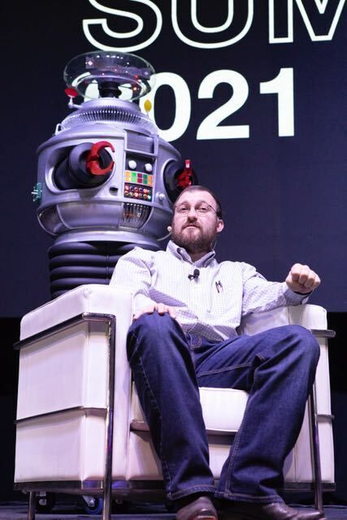
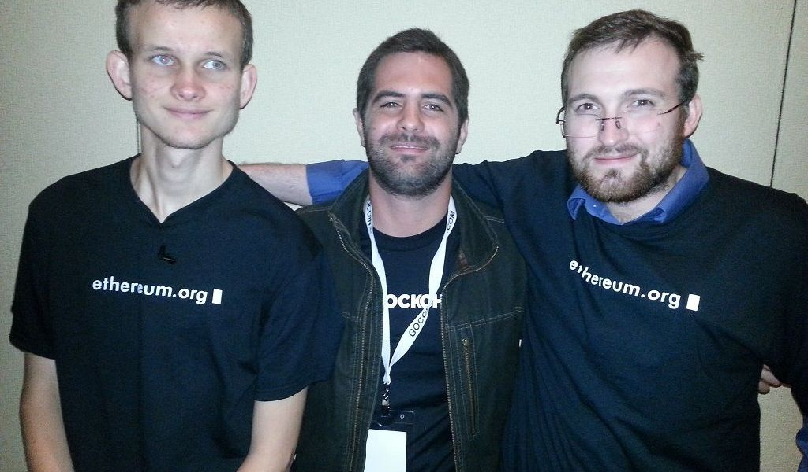
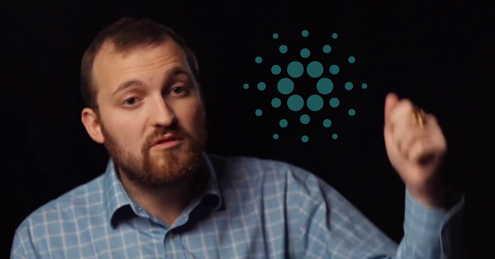
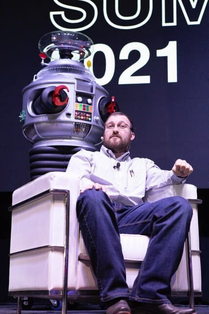
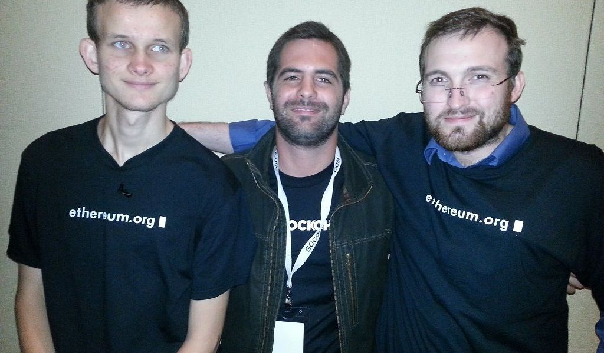
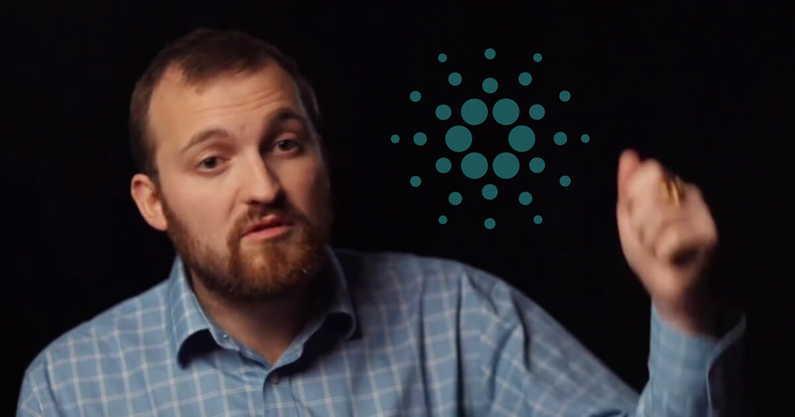

Charles Hoskinson
De origen norteamericano, Hoskinson estudió Teoría analítica de
números (una variante de Matemáticas) en la Universidad de Colorado.
Previamente, también había asistido a la Universidad Estatal
Metropolitana de Denver. Su interés por el bitcoin hizo que, en el año
2013, iniciara un proyecto de educación sobre la famosa moneda
digital, y a abandonar el que, por aquel entonces, era su principal
fuente de ingresos: analista en una consultoría. A finales de ese
mismo año, Hoskinson conoció a Vitalik Buterin y se unió al equipo que
trabajó para lanzar al mercado la criptomoneda ethereum. Un año
después, una fuerte discusión entre ambos provocó que el líder del
proyecto, Buterin, echara a su socio del equipo.
Un tiempo después, uno de los excompañeros de Hoskinson que participó
con él en el proyecto Ethereum, lo propuso para poner en marcha el
IOHK (Input Output Hong Kong). Se trataba de un negocio que, a través
de la investigación y trabajos de ingeniería, se dedicaba al
desarrollo de cadenas de bloques y criptomonedas. Hoskinson trabajó a
fondo en su nuevo proyecto y, poco tiempo después, lanzó su proyecto
más exitoso, Cardano, que se convirtió en una cadena de bloques
pública, así como una plataforma donde poder alojar a ADA, la moneda
digital asociada.
 




